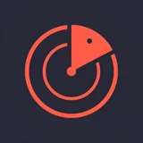

Local discovery
Radar
Discover nearby shops and offers through short videos. Radar brings local businesses into one feed, with points users can collect through activity and redeem for rewards.
Swipe to explore · Tap to enlargeView on Google Play